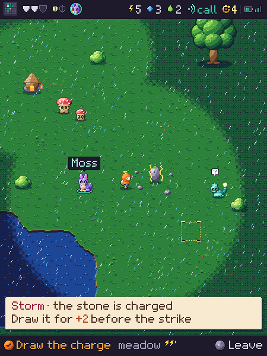
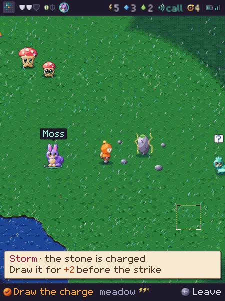
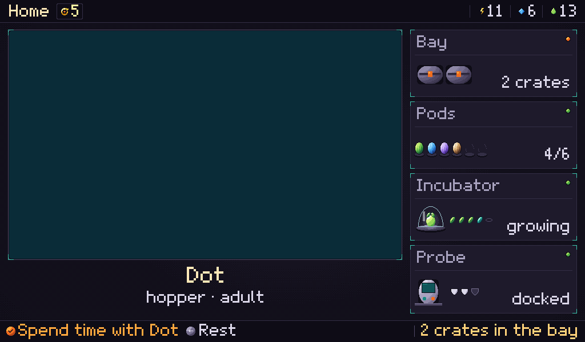
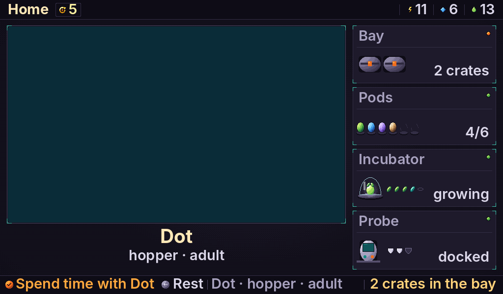

Each image is shown at one device pixel per image pixel by default, so nothing is blurred. "True size" scales to the Companion's 2.41" panel (311 ppi) using your screen's pixel density; enter it if you know it.
Same place, redrawn at each tile size. 32 px gives about 14 tiles across; 48 px about 9. Judge the pawn, the tokens and the signs, not the scene.


Same Station chrome, no creature, so only the type is judged. The Station panel is 1024×600; on a phone, scroll sideways inside each image.

